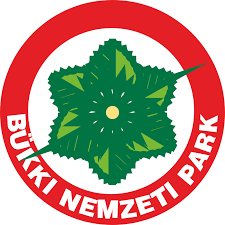

Üdvözöljük a Nemzeti Parkok oldalán!
Magyarország gazdag természeti és kulturális örökséggel rendelkezik, melynek legféltettebb kincseit a nemzeti parkok őrzik. Ezek a különleges területek nem csupán a biológiai sokféleség megőrzésében játszanak kulcsszerepet, hanem lehetőséget biztosítanak a látogatók számára is, hogy testközelből tapasztalhassák meg a természet csodáit, megismerjék a helyi élővilágot, és kikapcsolódjanak a mindennapok rohanásából. Hazánkban tíz nemzeti park található, melyek mindegyike egyedi jellemzőkkel és értékekkel bír, tükrözve az adott tájegység geológiai, hidrológiai, növény- és állattani sajátosságait.

A nemzeti parkok létrehozásának célja a természeti értékek, tájak, ökoszisztémák, valamint a kapcsolódó kulturális értékek védelme, kutatása, bemutatása és fenntartható használata. Ezek a területek szigorú védelem alatt állnak, de kijelölt útvonalakon, látogatóközpontokban és szervezett programok keretében bárki számára látogathatók. A nemzeti parkok igazgatóságai fontos munkát végeznek a természetvédelem, a kutatás, az oktatás és a turizmus területén, hozzájárulva a társadalom környezettudatosságának növeléséhez is.
A Hortobágyi Nemzeti Park, hazánk első nemzeti parkja, 1973-ban jött létre, és az UNESCO Világörökség része. Az egyedülálló pusztai táj, a gazdag madárvilág és a hagyományos pásztorkodás kultúrája teszi különlegessé. A Kiskunsági Nemzeti Park a Duna-Tisza köze változatos élőhelyeit foglalja magába, a homokbuckáktól a szikes pusztákig. A Bükki Nemzeti Park a karsztjelenségeiről, barlangjairól és gazdag erdőségeiről ismert, míg az Aggteleki Nemzeti Park a páratlan cseppkőbarlang rendszerével büszkélkedhet, ami szintén a Világörökség része.
A nemzeti parkok látogatása felejthetetlen élményt nyújt. Lehetőség van túrázni a kijelölt tanösvényeken, részt venni szakvezetéses túrákon, megfigyelni a madarakat, vagy egyszerűen csak gyönyörködni a táj szépségében. Minden park kínál valamilyen egyedi látnivalót vagy programot, legyen szó a Fertő-Hanság Nemzeti Park vizes élőhelyeiről, az Őrségi Nemzeti Park hagyományos falvairól, a Duna-Dráva Nemzeti Park ártéri erdeiről, a Balaton-felvidéki Nemzeti Park vulkáni tanúhegyeiről, a Duna-Ipoly Nemzeti Park változatos domborzatáról, vagy a Körös-Maros Nemzeti Park pusztáiról és vizes területeiről.
Fontos, hogy látogatásunk során tartsuk be a nemzeti parkok szabályait, ne szemeteljünk, ne zavarjuk az állatokat, és ne vigyünk el semmit a természetből. Ezzel hozzájárulunk ahhoz, hogy ezek a csodálatos területek a jövő generációk számára is megmaradjanak. Fedezzük fel együtt Magyarország természeti kincseit, és óvjuk értékeiket!